Slice
brand sheet
Six pieces of one cake. A mark built from geometry, one gradient that flows through everything it touches, and heavy type that stays quiet around it. This is the sheet a brand team hands over; everything on it is also a rule the gate can score.
The markSix pie slices, apex down, apex up, in a 3:1 band. The flow runs through all six as one field.
Clear spaceOne slice radius on every side. Minimum width 96 px on screen, 28 mm in print.
r
r
The mark is never rotated, mirrored, outlined or given a shadow. A single slice may stand alone as the avatar or favicon unit.
ColourThree grounds, one ink, six gradient stops. The stops are for the flow; only pink and sky ever appear as flat accents.
Ink#2A2140
text, mono mark
text, mono mark
Milk#F7FAFC
default ground
default ground
Sky-milk#B1D9F0
poster, social
poster, social
Night#161228
dark ground
dark ground
Pink#F67699
wordmark, accent
wordmark, accent
Mint#62E6CD
Sky#4FD0FF
links on light
links on light
Lilac#B99BE8
the seam
the seam
Peach#F6A882
Lemon#E9E25A
never as text
never as text
The flowOne gradient, left to right, cool to warm. Raw on the mark and on display type. Softened when it is a ground.
mint 0
sky 20
lilac 36
pink 50
pink 66
peach 82
lemon 100
ground wash, milk
ground wash, night
TypeAlpino for everything that is read. Nagoda only where the brand speaks in one line.
Cut it into pieces you can ship.
Alpino Black
display, -0.035 em
two lines max
display, -0.035 em
two lines max
SLICE
Alpino Black
wordmark, 0.42 em
pink or ink or white
wordmark, 0.42 em
pink or ink or white
Slices of birthday cake inspiration
Nagoda Regular
voice line only
never body
voice line only
never body
A brand that stays itself across a hero, a story card, a Slack avatar and a printed poster, and still has room to move. Body copy sets in Alpino Regular at 17 px with a line height of 1.5, under 75 characters a line.
Alpino Regular
body, 17 / 1.5
body, 17 / 1.5
gate: on_brand=0.91 novelty=0.42 seed=118234
IBM Plex Mono
code and data only
code and data only
Do and do notEach of these is a check the gate runs.
Slices of birthday cake inspiration
Voice line in ink on sky-milk. Readable at any size.
Slices of birthday cake inspiration
Pastel on pastel for text a reader has to parse. Contrast fails.
Slice
Gradient on display type, two lines or fewer, on milk.
The flow on a shape that is not a slice or type.
Rotated mark. The band is always level.
One slice alone as the avatar unit.
GeometryMeasured off the PSD and regenerated by brand/build_mark.py, so the anime.js ident and the gate read the same numbers.

| slice radius | 189 |
| apex angle | 62° |
| pitch | 209 |
| stagger | 104.5 right, 40 down |
| seam | 6 |
| corner round | 22 stroke, round join |
| band aspect | 2.95 : 1 |